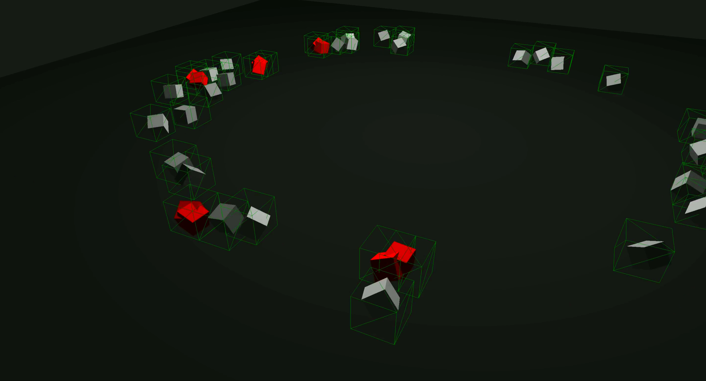
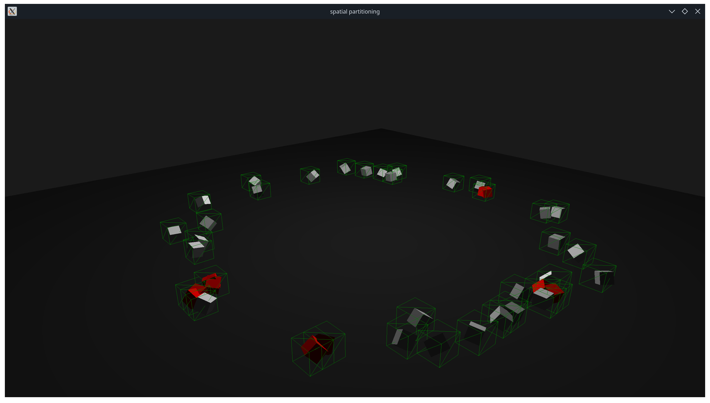

SpatialGrid Collision System

An implementation of precise collision detection optimized by combining the Separating Axis Theorem (SAT) with hash-based spatial partitioning to improve performance. This method enables efficient real time rendering and collision handling of large number of particles in complex scenes, under certain constraints.
Tech Stack
OpenGL
C++
GLM
GLFW
Screenshots


Key Code Snippet
// function to find potential collision pairs
std::vector> SpatialGrid::find_collision_candidates(const std::vector &vec){
std::vector> pairs;
clear_grid();
fill_grid(vec);
for(const auto& [cell_key, particles] : grid) {
glm::ivec3 coords = key_to_grid_coords(cell_key);
for(int dx = -1; dx <= 1; dx+=1) {
for(int dy = -1; dy <= 1; dy+=1) {
for(int dz = -1; dz <= 1; dz+=1) {
glm::ivec3 neighbor_coords = coords + glm::ivec3(dx, dy, dz);
int neighbor_key = get_cell_key_from_grid_coords(neighbor_coords);
auto it = grid.find(neighbor_key);
if(it != grid.end()) {
// Check collisions between current cell and neighbor
check_cell_pair_collisions(particles, it->second, vec, pairs);
}
}
}
}
}
return pairs;
Project Comments
This project was written as a way to gain a basic understanding of how games may handle a large number of collisions. I used spatial grid partitioning based on hashes, which works well for uniformly distributed objects or particles. However, its advantages diminish when introducing non-uniformly distributed data or effects such as explosions or boids. For those cases, other data structures such as k-d trees or BVHs should be further explored.
Some of the key challenges and lessons learned from this project included mapping 3D coordinates to a hash map, understanding how the SAT algorithm works, and revisiting 3D transformations using GLM.
The next steps for this project could include implementing collision resolution (which I understand is much more complex than detection), creating visual effects upon detecting collisions, and replacing cubes with actual objects such as bullets, boids, and so on.